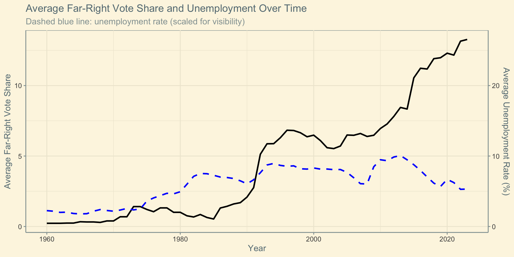
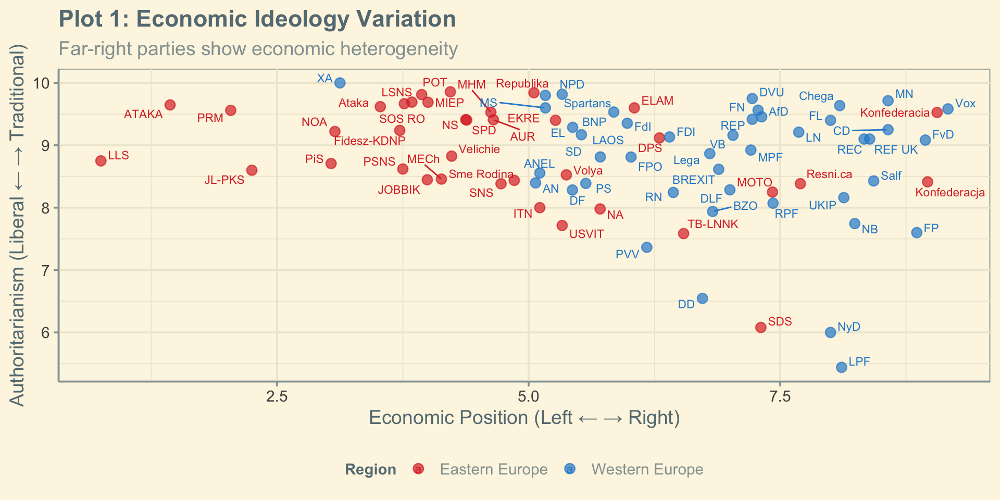
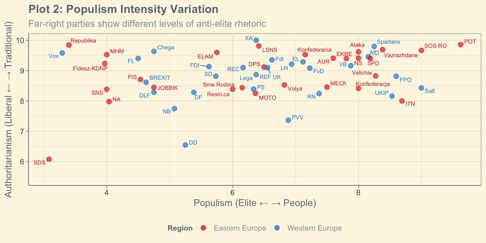
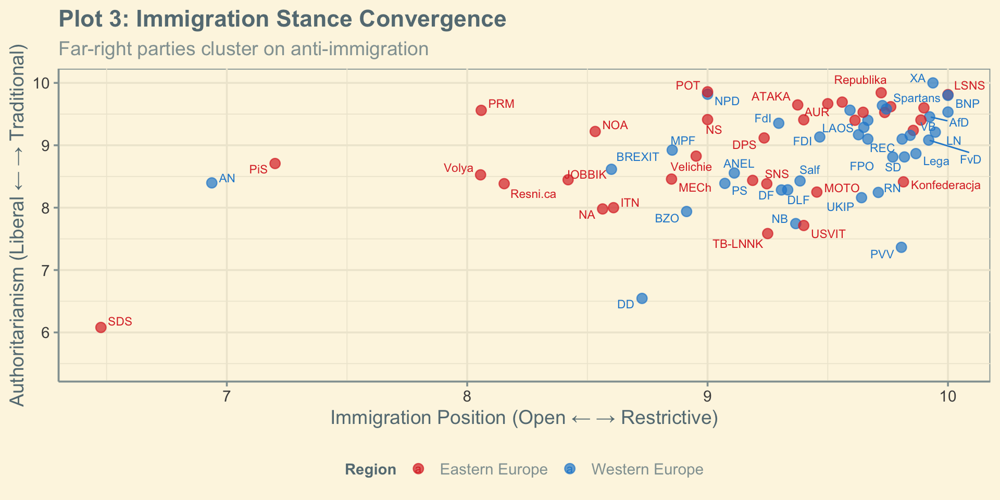
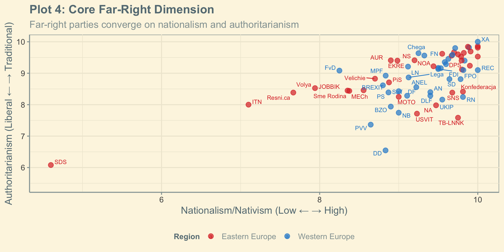

The Far Right (PLIT10172)
Introduction and What is the Far-Right?
Dr. Christos Vrakopoulos
Today’s Lecture
Part 1: Course Introduction & Why Study the Far-Right?
Part 2: The Empirical Reality - Rise of Far-Right Parties
Part 3: Definitional Challenges - What is the Far-Right?
Part 4: Course Roadmap - Where We’re Heading
Course Introduction
Format:
- 10 lectures (1 hour each)
- 10 seminars (1 hour each)
Assessment:
- Essay Plan (10%) - Week 9, Thursday 19th March at 23:59
- Mid-term Opinion Piece (30%) - Week 7, Thursday 7th March at 23:59
- Final Essay (60%) - Thursday 16th April at 23:59
Focus:
- Comprehensive exploration of far-right politics globally
- Primarily Europe but extending to comparative cases
Course Aims
Concepts: Key terms like far-right, populism, radical right, and ‘new nationalism’
Analytical skills: Different political and international dimensions of the far-right
Theoretical tools: Understanding current rise through comparative analysis across cases and time
Critical thinking: Assess theories explaining origins and persistence of far-right populism
Learning Outcomes
By the end of this course you should be able to:
Demonstrate a knowledge and understanding of the debates surrounding the contemporary far right in Europe and the ability to evaluate the different perspectives on the far right
Develop an understanding of the conceptual and definitional issues involved in the discussion of the far right
Appreciate the challenges presented to contemporary theories by the surge in support for the far right in the 1990s
Assess the impact of the far right on politics in Europe
Apply insights from the contemporary analysis of the far right and interpret the evidence in a range of country studies drawn from Europe
What’s the problem?
The Aggregate Picture
Exploring by Country
Click on country names in the legend to show/hide them. Double-click to isolate a single country.
Far-Right vs. Mainstream Parties
How does far-right growth compare to traditional political blocs?
Recent Developments (2024-2025)
End of Spanish/Portugese exceptionalism
Far-right in government (Italy, Netherlands, Austria, USA, India, Brazil, Argentina, etc.)
UK? Scottish up coming election
Why does this happen?
Scan the QR code or click the link to answer the poll:
The Immigration Paradox

Key Question: Why do areas with low immigration often show high far-right support?
The Unemplyment Puzzle
Definitional Framework
The Challenge: Who Belongs?
Radical Right?


Extreme Right?


Common Terminology Problems
Multiple terms used:
- Right-wing populism
- Far-right populism
- Extreme right
- Radical right
- Populist radical right
Challenge:
Do these terms mean the same thing?
Should they?
Mudde’s Framework: Three Core Features
%%{init: {'themeVariables': { 'fontSize': '24px', 'nodeSpacing': 60, 'rankSpacing': 60}}}%%
flowchart TB
A[Far-Right] --> B[Nativism]
A --> C[Authoritarianism]
A --> D[Populism]
Key insight: Nativism is the driving force for their policies
Nativism: More Than Nationalism
- Nationalism: The belief that political boundaries should align with national boundaries, and that the nation-state should be the primary source of political identity and sovereignty
- Nativism: States should be inhabited exclusively by native group members
- “Non-natives” defined by: Race, ethnicity, religion, or lifestyle (e.g., LGBTI+)
- Policy driver: Immigration restriction, cultural protectionism, welfare chauvinism
Authoritarianism: Order and Punishment
- Not anti-democratic: Accept electoral democracy
- Social order: Strictly hierarchical society
- Authority: Strong adherence to in-group leaders
- Punishment: Severe consequences for rule-breaking
- Traditional values: Often religiously or culturally defined
Populism: People vs Elite
- Core claim: Society divided into “pure people” vs “corrupt elite”
- Democratic legitimacy: “Will of the people” is morally superior
- Far-right populism: People = in-group, Elite = those helping out-group
- Different from left populism: Class exploitation vs cultural threat
Is Far Right a homogenous party family?
Is Far Right a homogenous party family cont?
Is Far Right a homogenous party family cont?
Is Far Right a homogenous party family cont?
Radical vs Extreme: A Crucial Distinction
%%{init: {'themeVariables': { 'fontSize': '22px', 'nodeSpacing': 60, 'rankSpacing': 60}}}%%
flowchart TB
A[Far-Right] --> B[Radical-Right]
A --> C[Extreme-Right]
B --> D["Accepts procedural <br/>democracy<br/>Rejects violence"]
C --> E["Rejects democracy <br/>entirely<br/>May accept violence"]
Golder (2016): “Radicalism is not a moderate form of extremism”
Course Structure
Week 2: Western Europe
Week 3: United Kingdom
Week 4: Scandinavia
Week 5: Southern Europe
Week 6: Eastern Europe
Week 7: Demand-Side Theory
Week 8: Supply-Side Theory
Week 9: Party Competition & Normalization Mechanisms
Week 10: Global Patterns & Democratic Futures
Key Resources
Essential databases:
Fun reading:
Halikiopoulou: “Far right groups may be diverse – but here’s what they all have in common”
Key Takeaways
Far-right support has grown substantially since the 1980s
The trend is not uniform across countries
This growth often coincides with decline in traditional parties
Understanding these patterns is crucial for:
- Democratic resilience
- Policy responses
- Theoretical development in political science